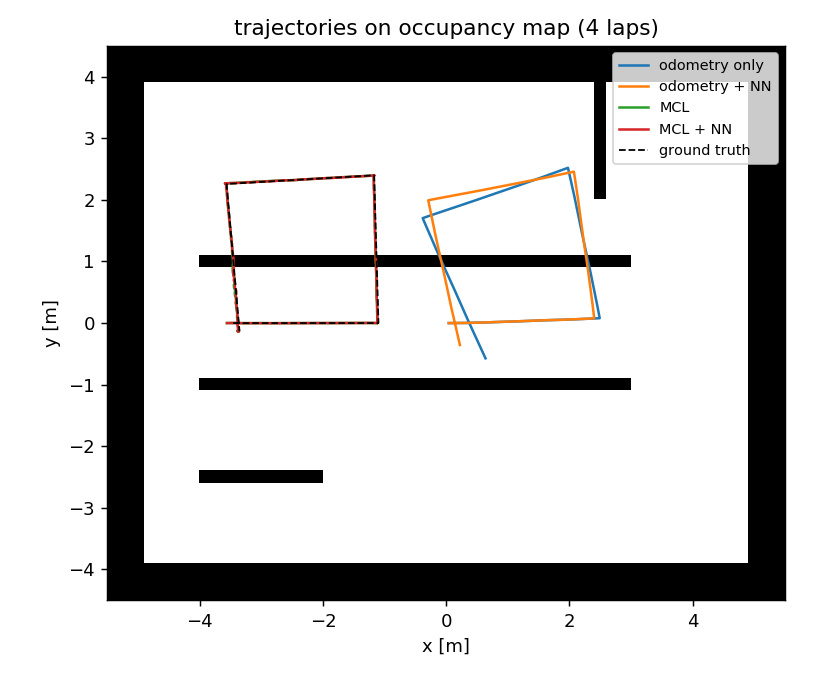
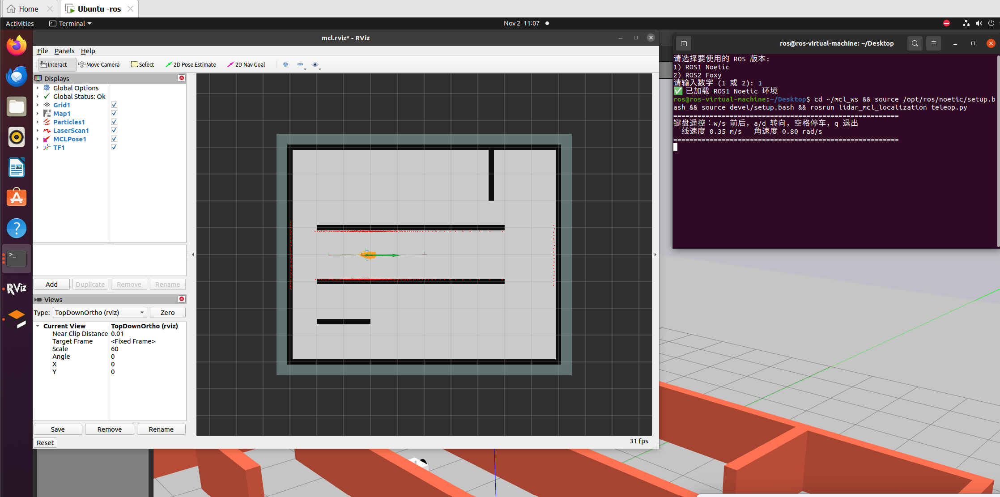
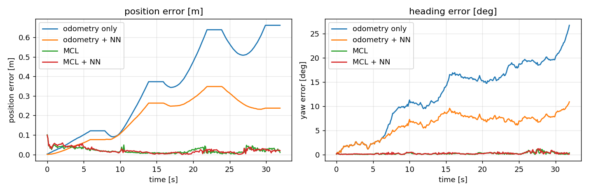
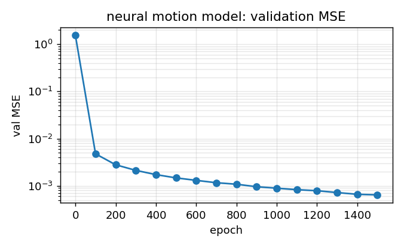

基于 2D 激光雷达的蒙特卡洛定位（MCL）
本页对应 src/ground/lidar_mcl_localization。在第 6 章用 amcl 做定位之后，
这一节把盒子打开：用不到 400 行纯 NumPy 把粒子滤波的每一步写出来，
再回到 Gazebo 里与真实位姿对比，最后用一个神经网络学掉轮式里程计的运动残差。

图 1 同一张占据栅格地图上的四条轨迹（4 圈方形循环）。灰色是地图，黑色虚线是真值。 蓝色（纯里程计）明显跑偏；绿色（MCL）与红色（MCL + 神经网络）几乎贴在真值上。
1. 这个模块解决什么问题
轮式里程计靠"数轮子转了多少"来推位姿，两个误差来源修不掉：
- 系统性误差：轮径、轮距与标称值有偏差，走直线会慢慢跑偏；
- 打滑：转向时轮胎既滚又刮，实际位移小于轮子转角对应的位移， 而编码器只数轮子 —— 于是里程计会高估走过的距离与转过的角度，而且转向越急越严重。
第 6 章的 amcl 用激光雷达修正这两类误差，但它是一个黑盒：参数在 yaml 里，
中间发生了什么要靠猜。本模块把每一步显式写出来：
| MCL 的三个组件 | 本模块的实现 | 文件 |
|---|---|---|
| 运动模型（粒子怎么散开） | 里程计增量模型，α₁~α₄ 噪声 | motion_model.py |
| 观测模型（粒子怎么打分） | 似然场（likelihood field） | sensor_model.py |
| 重采样（谁活下来） | 低方差重采样 + Neff 门控 | particle_filter.py |
| 地图与似然场 | 自己读 PGM、八邻域 BFS 距离变换 | map_model.py |
| 运动残差修正 | 4→24→24→3 的 MLP（纯 NumPy 反传） | nn_motion.py |
2. 原理
2.1 运动模型：粒子怎么跟着里程计走
一帧里程计给出增量 ，每个粒子独立采样：
四个 α 的物理含义：α₁ 走多远的不确定性、α₂ 直行时转多少的不确定性、 α₃ 转向时转多少的不确定性、α₄ 打滑带来的额外位移。
难点在于 α 只能手调：调大 → 定位抖动；调小 → 真实打滑时跟不上、直接发散。 这就是后面要用神经网络的原因（见 2.4）。
2.2 观测模型：似然场
朴素做法是"对每个粒子、每束激光都做一次完整射线投射"，复杂度 ， 600 个粒子 × 360 束就会卡死。似然场把这件事预计算成一张到最近障碍物的距离图， 运行时只需把激光末端点变换到地图坐标查表：
其中 是"激光末端点离最近障碍物有多远"。正确位姿会让大多数末端点落在障碍物附近（），
权重因此很高。这正是 amcl 默认的 likelihood_field 模型。
距离图用八邻域 BFS 计算（不用 scipy 的距离变换），220×180 的地图毫秒级完成。
360 束激光再抽稀到 45 束（beam_step=8），速度提高 8 倍而精度几乎不变。
2.3 重采样：低方差 + Neff 门控
每帧都重采样会加速粒子退化。本模块用有效粒子数判断是否需要重采样：
只有当 时才执行低方差（系统）重采样。位姿估计的位置取加权平均， 航向取圆周平均 —— 普通平均在 附近会错得离谱。
2.4 神经网络：学掉运动残差
滑移率是工况的函数（低速小转角几乎不打滑，急转弯能到 10% 以上），常数 α 拟合不了。 本模块用一个 4→24→24→3 的 MLP，从最近一段里程计的统计量预测：
| 输出 | 含义 | 安全范围 |
|---|---|---|
| 真实位移 ≈ · 里程计位移 | 截断到 [0.8, 1.2] | |
| 真实转角 ≈ · 里程计转角 | 截断到 [0.8, 1.2] | |
| noise | 噪声标度，等比缩放 α₁~α₄ | 截断到 [0.5, 4.0] |
输入 4 维全是有界的量：线速度 、角速度 、、。
两个训练上的坑（都是我踩过之后改的）
- 不要用比值当特征（如 ）：纯旋转时 ， 特征会炸到十几，小样本下网络在直行工况外推出 （训练标签最大只有 0.96）， 修正后比不修正还差。
- 训练与推理的映射必须一致：如果训练时网络直接输出 ，推理时就不能再套一层 —— 否则 会被映射成 。第一版就是这么错的， 里程计误差从 0.345 m 反而涨到 0.403 m。
3. 快速开始
mkdir -p ~/catkin_ws/src && cd ~/catkin_ws/src
ln -s <仓库路径>/src/ground/lidar_mcl_localization .
cd ~/catkin_ws && catkin_make && source devel/setup.bash
# ① 一条命令：Gazebo 场景 + 机器人 + MCL 定位（无头，无显卡也能跑）
roslaunch lidar_mcl_localization main.launch
# ② 带界面
roslaunch lidar_mcl_localization main.launch gui:=true rviz:=true
# ③ 键盘遥控（另开终端）
rosrun lidar_mcl_localization teleop.py
# ④ 用定位结果闭环走到目标点（不是用真值！）
rosrun lidar_mcl_localization goal_driver.py _goal_x:=2.0 _goal_y:=2.5
# ⑤ 不开 ROS 也能跑（main.py 是薄入口，转发到下面三个脚本）
python3 main.py # 默认：离线闭环自检
python3 main.py --scene # 由墙体定义重新生成 world + 地图
python3 main.py --experiment # 训练网络 + 四组对比 + 出图（需要 MuJoCo）
# 也可以直接调脚本
python3 tools/gen_scene.py
python3 tools/offline_demo.py
python3 tools/run_experiment.py
场景与地图由同一份定义生成
墙体只写在 src/lidar_mcl_localization/scene_layout.py 里，tools/gen_scene.py 同时导出
worlds/mcl_room.world 与 maps/mcl_room.pgm。
这样改了场景不会忘记改地图 —— 地图与场景不一致时，粒子滤波会稳定收敛到错误位置，
而且看起来完全像"滤波器参数没调好"，极难排查。
4. 代码结构
| 文件 | 作用 |
|---|---|
main.py |
统一入口：python3 main.py 默认跑离线自检，--scene / --experiment 转发对应脚本 |
src/.../scene_layout.py |
墙体几何、出生点、雷达参数（唯一真实来源） |
src/.../map_model.py |
PGM 加载、世界↔栅格变换、射线投射、似然场 |
src/.../motion_model.py |
里程计增量模型、神经网络修正钩子 |
src/.../sensor_model.py |
似然场观测模型、粗配准（ScanMatcher） |
src/.../particle_filter.py |
预测/加权/重采样/Neff/协方差 |
src/.../nn_motion.py |
MLP 与修正器 |
scripts/mcl_node.py |
定位节点：订 /scan /odom，发 /mcl_pose /particles /tf |
scripts/map_publisher.py |
把 PGM 地图发布成 /map（OccupancyGrid，latched），替代 map_server |
config/mcl.rviz |
rviz 配置：地图 + 粒子云 + 激光 + 定位协方差 + 机器人模型 |
scripts/teleop.py |
键盘遥控（termios，无 GUI 依赖） |
scripts/goal_driver.py |
用 /mcl_pose 闭环走到目标点 |
tools/gen_scene.py |
生成 world + 地图 |
tools/offline_demo.py |
不开 ROS 的闭环自检 |
tools/run_experiment.py |
采集数据 → 训练 → 四组对比 → 出图 |
5. 参数说明
在 launch/main.launch 里改，或命令行覆盖：roslaunch ... num_particles:=1000。
| 参数 | 默认 | 说明 |
|---|---|---|
num_particles |
600 | 粒子数。800~1000 更稳，2000 开始明显吃 CPU |
alpha |
[0.12, 0.03, 0.12, 0.03] |
运动模型噪声 α₁~α₄ |
sigma |
0.20 | 观测模型末端点标准差（米）。太小会被一束脏数据打死 |
beam_step |
8 | 每 8 束取 1 束参与计算（360 → 45） |
resample_ratio |
0.5 | 时才重采样 |
init_pose |
[-3.5, 0.0, 0.0] |
初始位姿（也可用 rviz 的 2D Pose Estimate） |
global_localization |
false | 在全图空闲格撒点（绑架问题） |
6. 运行效果
6.1 Gazebo 实跑（Ubuntu 20.04 + Noetic + Gazebo 11，无 GPU）
$ roslaunch lidar_mcl_localization main.launch gui:=true rviz:=true
$ rostopic hz /mcl_pose
average rate: 10.011
$ rostopic echo -n1 /mcl_diagnostics/data
[428.04, 0.0952, 0.0310, 0.0729, 0.0019, 1.0, 370.0]
# Neff 位置散布 航向散布 位置误差 航向误差 重采样次数 更新次数

图 2 rviz 实拍（main.launch gui:=true rviz:=true）：灰色是 /map 占据栅格，
橙色粒子云紧贴在机器人周围（散布约 5 cm，说明已经收敛），
红色激光点贴在墙面上，绿色位姿箭头与走廊方向一致。
粒子云“收紧成一团”正是定位收敛的直接证据；如果滤波器发散，会看到橙色粒子散满整张地图。
出生点初始位置误差 0.071 m；直行 4 s 后 0.066 m；转向后再直行 0.050 m （同期里程计累计漂移 0.284 m）。航向误差在静止时约 0.1°， 急转弯过程中会短暂升到 7.6°——这是 把转向滑移一起吸收的后果。
6.2 四组对比（tools/run_experiment.py）

图 3 左：位置误差；右：航向误差。蓝线（纯里程计）一路漂到 0.66 m / 27°； 橙线是加了神经网络修正的里程计，明显改善；绿线与红线（两种 MCL）几乎贴着零。
| 方案 | 位置误差 均值 / 最大 | 航向误差 均值 / 最大 |
|---|---|---|
| ① 纯里程计 | 0.345 m / 0.662 m | 12.52° / 26.73° |
| ② 里程计 + 神经网络 | 0.195 m / 0.348 m | 6.17° / 10.89° |
| ③ MCL（不用网络） | 0.020 m / 0.101 m | 0.19° / 1.06° |
| ④ MCL + 神经网络 | 0.021 m / 0.099 m | 0.23° / 1.19° |
怎么读这张表 —— 两个诚实的结论
- 神经网络对纯里程计有效：误差从 0.345 m 降到 0.195 m（−43%）， 说明它确实学到了"转向越大、滑移越大"的规律（训练曲线见图 4）。
- 但在 MCL 里几乎没差别（0.020 → 0.021 m）。原因是观测更新本身就在吸收
里程计的系统误差，网络的价值被掩盖了。把激光更新降到 2 Hz（
scan_every=2） 时网络能再改善约 19%（0.0221 → 0.0179 m），但趋势不稳定，不宜过度解读。
这个结论比"神经网络让一切变好"更值得记住：在已经有观测修正的系统里， 改善先验模型的收益会被观测淹没。

图 4 神经网络运动模型的验证集 MSE 随训练轮次下降（1500 轮，从 2.55 降到 6.4e-4）。
7. 测试
cd src/ground/lidar_mcl_localization
python3 -m pytest test/ -q # 6 passed
python3 test/test_mcl.py # 不装 pytest 也能跑：59 项断言
测试全部离线（不需要 ROS / Gazebo），覆盖的都是"容易悄悄坏掉"的地方：
- 角度归一化在 边界、圆周平均不跳变；
- 地图坐标往返误差小于一格；似然场在墙格为 0、走廊中心约 0.9 m；
- 射线投射沿走廊命中（8.5 m 走廊超过 8 m 量程时返回量程）；
- 观测模型：正确位姿的对数权重必须显著高于平移 1.5 m / 转 0.8 rad 的位姿（−1.9 vs −38.5）；
- 粒子滤波从 0.30 m 的初始偏差收敛到 0.068 m；重采样后加权均值不变；
- 神经网络：特征有界、修正量被截断在 ±20%、反向传播让 loss 下降一个数量级。
8. 已知限制
- 精度受地图分辨率限制：5 cm/像素的地图上，2 cm 已经是下限； 想再提升要先提高地图分辨率，而不是继续调滤波器参数。
- 只在仿真里验证：真值来自
/gazebo/model_states，换真车需要人工测点或扫描匹配。 - 未评估全局定位的鲁棒性：
global_localization:=true可以在全图撒点， 但在对称走廊里可能收敛到镜像位置，本模块没有系统测试这一点。 - 神经网络不参与观测模型：它只修正运动模型，输入是轮速/角速度， 换到真车要重新采数据训练。
ScanMatcher只做粗配准：搜索步长 5 cm / 2°，精度有限， 在本模块里只用于给神经网络提供替代标签，不参与主流程。
9. 参考
- Thrun, Burgard, Fox. Probabilistic Robotics. MIT Press, 2005. 第 8 章（粒子滤波）、第 6 章（似然场）。
- Fox, Burgard, Thrun. Monte Carlo Localization: Efficient Position Estimation for Mobile Robots. AAAI 1999.
- ROS Wiki: amcl（本模块实现的正是
likelihood_field模型那一支）。